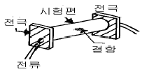
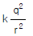
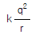
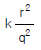
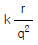
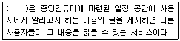

자기비파괴검사기능사 (2004-10-10 기출문제)
1과목: 자기탐상시험법
1. 비파괴검사 중 초음파탐상시험에 쓰이는 일반적인 주파수 범위는?
- 1 ∼ 20 kHz
- 75 ∼ 100 kHz
- 0.5 ∼ 20 MHz
- 75 ∼ 100 MHz
(정답률: 58%)

2. 자분탐상시험시 자분의 적용을 바르게 설명한 것은?
- 표면 바로 아래의 결함 검출은 건식자분이 습식자분보다 좋다.
- 형광자분은 비형광자분보다 언제나 좋은 감도를 나타낸다.
- 표면의 거친 정도가 심한 경우 습식 자분이 더 좋은 감도를 나타낸다.
- 재검사는 반드시 탈자 후 전처리부터 다시 시작하여야 한다.
(정답률: 22%)
3. 형광침투탐상시험시 적절한 세척여부를 확인하는 방법은?
- 부품을 자외선등 아래에서 확인한다.
- 부품을 태양광선 아래에서 확인한다.
- 부품을 백열전등 아래에서 확인한다.
- 부품을 열적외선으로 확인한다.
(정답률: 79%)
4. 습식자분은 일정한 용매에 희석하여 사용한다. 오랫동안 반복하여 사용했을 때 일어나는 현상이 아닌 것은?
- 시험면에서의 적심성이 나빠진다.
- 자분의 휘도가 나빠진다.
- 자분농도가 낮아진다.
- 시험면에서의 접촉각이 커진다.
(정답률: 56%)
5. 자분탐상시험과 관련한 침전시험(Wetting Test)의 내용중 틀린 것은?
- 검사액의 자분함량 점검방법이다.
- 사용되는 검사액은 매 24시간마다 측정 관리한다.
- 100cc 침전관에 검사액을 채운 후 침전시킨다.
- 20분 이상 자분이 침전하도록 놓아 둔다.
(정답률: 58%)
6. 제품의 비파괴검사중 탐상기의 고장이 발견되었을 때 대처 방법은?
- 교정 이후의 모든 제품은 재검사한다.
- 탐상기가 고장난 시점을 추정, 이 후를 재검사한다.
- 합격된 것만 재검사한다.
- 불합격된 것만 재검사한다.
(정답률: 79%)
7. 자분탐상검사에 사용하는 장치에 대한 설명중 옳은 것은?
- 코일법을 사용시 코일의 형태는 자장의 강도와는 관계없다.
- 자화전류의 전류계는 실효치로 표시한다.
- 분산 노즐에서 분포되는 검사액의 압력은 결함자분막 형성에 영향을 준다.
- 비형광자분을 사용하는 시험에는 자외선 조사장치가 필요하다.
(정답률: 67%)
8. 형광자분탐상시험에 자외선 조사등을 사용하는 이유는?
- 검사자의 눈을 보호하기 위하여
- 자기장이 나타나게 하기 위하여
- 자기의 강도를 더 높이기 위하여
- 자분 지시를 더 쉽게 보기 위하여
(정답률: 95%)
9. 자분탐상시험 장비중 시험면과의 접촉부에 납이나 구리같은 물질을 접촉면으로 사용하는 이유는?
- 용융점이 높기 때문이다.
- 용융점이 낮기 때문이다.
- 금속을 가열하는데 도움을 주기 때문에
- 접촉면적을 늘리고 전류밀도를 줄이기 위하여
(정답률: 19%)
10. 강봉을 축통전법으로 자분탐상검사하는 경우, 직경 200mm의 표면에 10 Oersted[Oe]를 얻기 위한 자화전류는?
- 500Amp
- 1,000Amp
- 1,500Amp
- 2,000Amp
(정답률: 알수없음)
11. 나사부를 가진 내경 2인치인 부품에 대한 적당한 자분탐상시험 방법이 아닌 것은?
- 나사부위에 평행인 자장을 가진 원형법
- 나사부위에 수직인 자장을 가진 원형법
- 축통전법을 사용한다.
- 증기 탈유법으로 전처리한다.
(정답률: 25%)
12. 결함 검출을 위한 자분탐상의 한 방법으로서 그림과 같은 시험법은?

- 축통전법
- 코일법
- Prod 법
- 극간법
(정답률: 77%)
13. 건설현장에서 용접부 검사에 많이 사용되는 자분탐상시험으로서 두 전극을 시험품에 근접된 두 지점에 접촉시켜 전류를 보내 검사하는 방법은?
- 관통법
- 프로드(prod)법
- 코일(coil)법
- 극간(yoke)법
(정답률: 63%)
14. 선형자화법으로 전류가 1000[A], 코일의 길이 45[㎝], 지름 5[㎝]의 강봉을 시험할 때 코일의 권선수는?
- 1 turns
- 5 turns
- 9 turns
- 23 turns
(정답률: 47%)
15. 직경이 7인치인 부품을 원형자화하려고 한다. 올바른 전류 값[A]을 구하면?
- 700 ∼ 1,200
- 1,500 ∼ 2,000
- 3,500 ∼ 4,900
- 4,900 ∼ 6,300
(정답률: 48%)
16. 다음은 통전시간의 설명이다. 틀린 것은 ?
- 형광자분탐상의 경우 최소 3초가 필요하다.
- 잔류법에서는 일반적으로 ¼초를 표준으로 한다.
- 충격전류는 3회 이상 통전을 원칙으로 한다.
- 비형광자분탐상의 경우 약 2초가 필요하다.
(정답률: 25%)
17. 각각의 자화방법으로 자화시킨 경우 자장 및 자화의 강도에 대하여 기술한 것이다. 옳은 것은?
- 프로드법에서는 자화전류치가 같으면 프로드간격에 관계없이 시험면의 자장의 강도는 같다.
- 극간법에서 전자속이 같으면 자극간에서의 시험체 중의 자속의 밀도에 따라 자화의 강도가 변한다.
- 코일법으로 시험체를 자화하는 것은 일반적으로 양단에 자극이 나타나고 그 자극에 가까운 부분일수록 강하게 자화된다.
- 축통전법에서는 자화전류치가 같으면 시험체의 단면적에 관계없이 시험면의 자장의 강도는 같다.
(정답률: 42%)
18. 자분탐상시험시 자장계(Field Indicator)의 주 역할은?
- 자계의 방향을 탐지하는데 사용한다.
- 포화 자계를 지시하는데 사용한다.
- 잔류자기의 존재 여부를 확인하는데 사용한다.
- 소요 암페아를 측정하는데 사용한다.
(정답률: 53%)
19. 영구자석을 사용한 극간법의 장점에 해당되는 것은?
- 전원이 요구되지 않는다.
- 자화의 세기를 조정할 수 있다.
- 결함자분모양이 뚜렷하게 나타난다.
- 건식연속법으로 사용할 수 있다.
(정답률: 34%)
20. 다음 중 와전류탐상시험법으로 측정할 수 없는 것은?
- 표면직하의 결함위치
- 재질검사
- 피막두께측정
- 내부 결함의 길이
(정답률: 80%)
2과목: 자기탐상관련규격
21. 검사할 시험체에서 금속학적 연속성이 파단되었음을 나타내는데 사용되는 용어는?
- 겹침
- 수축
- 이음매
- 불연속
(정답률: 67%)
22. 다음 중 시험품에 존재하는 결함에 의해서 나타나는 자분 모양은?
- 자기 펜 흔적
- 시편의 심한 경도 차이
- 구조물의 심한 두께 차이의 경계면
- 라미네이션에 의한 지시
(정답률: 29%)
23. 원형자화법(circular magnetization)에 속하지 않는 자화방법은?
- 직각통전법
- 자속관통법
- 프로드법
- 코일법
(정답률: 36%)
24. 프로드(prod)를 사용하여 자분탐상시험을 수행할 때 일반적으로 가장 적절한 프로드(prod) 사이의 거리는?
- 3∼5 인치
- 6∼8 인치
- 8∼10 인치
- 10 인치이상
(정답률: 72%)
25. 한 개의 전하(q)가 있을 때 이 전하로부터 거리 r만큼 떨어진 곳에 같은 크기의 전하에 작용하는 힘(F, 자계의 세기)을 바르게 나타낸 식은?(단, k는 상수)




(정답률: 44%)
26. KS D 0213에 의한 형광자분을 사용시 자외선 조사장치의 자외선강도로 올바른 것은?
- 필터면에서 38cm 떨어진 위치에서 800μW/cm2 이상
- 필터면에서 38cm 떨어진 위치에서 500μW/cm2 이상
- 필터면에서 25cm의 거리에서 800μW/cm2 이상
- 필터면에서 25cm의 거리에서 500μW/cm2 이상
(정답률: 79%)
27. KS D 0213에서 자분탐상시험 연속법 적용시 원칙적으로 적용하는 통전시간에 대한 규정으로 옳은 것은?
- 통전중에 자분의 적용을 시작할 수 있는 정도의 시간
- 통전중에 자분의 적용을 완료할 수 있는 정도의 시간
- 자화전류의 종류(교류, 직류 등)에 따라 달라진다.
- 통전 시간에 대한 규정이 없다.
(정답률: 알수없음)
28. KS D 0213에서 C형 표준시험편의 C1은 다음 중 어느 것과 가까운 유효자계에서 자분 지시가 나타나는가?
- A1-15/50
- A1-7/50
- A2-15/50
- A2-7/50
(정답률: 65%)
29. KS D 0213에서 전류를 이용한 자화장치는 자화전류의 종류에 따라 분류할 수 있다. 다음 중 분류방법으로 적당하지 않은 것은?
- 교류
- 직류
- 반파직류
- 충격전류
(정답률: 46%)
30. KS D 0213에 따라 자분탐상검사를 수행할 때 전처리 방법으로 적절하지 않은 것은?
- 용접부의 경우 시험범위에서 모재측으로 약 20mm 넓게 전처리하였다.
- 시험체가 분해될 수 있어 모두 분해하여 전처리하였다.
- 습식법으로 검사하기 때문에 전처리한 시험면을 완전히 건조시키지 않았다.
- 시험면에 접근하기 곤란한 구멍은 그대로 두고 접근 가능한 곳만 전처리하였다.
(정답률: 30%)
31. KS D 0213에 의한 자분탐상시험에서 자화에 대한 설명으로 다음 중 틀린 것은?(오류 신고가 접수된 문제입니다. 반드시 정답과 해설을 확인하시기 바랍니다.)
- 자계의 방향은 예측되는 흠의 방향에 대하여 가능한한 직각으로 한다.
- 자계의 방향은 시험면에 가능한 한 직각으로 한다.
- 가능한 한 반자계를 크게 한다.
- 시험면을 태워서는 안될 경우 시험체에 직접 통전하지 않는다.
(정답률: 45%)
32. KS D 0213에서 A형 표준시험편에 A1 - 15/100 이라 표시되어 있을 때 사선의 왼쪽이 나타내는 수자의 의미는?
- 인공흠의 깊이
- 인공흠의 길이
- 판의 두께
- 판의 길이
(정답률: 72%)
33. KS D 0213에서 규정하고 있는 시험편의 표준 중 가장 작은 치수로 사용이 가능한 것은?
- A1-7/50(원형)의 인공흠의 깊이
- C형 표준시험편의 인공흠의 깊이
- B형 시험편의 인공흠의 직경
- C형 시험편 접착에 사용되는 양면 점착테이프의 최대 두께
(정답률: 20%)
34. KS D 0213에 의한 자분모양을 모양 및 집중성에 따라 분류할 때 다음 중 맞게 분류된 용어는?
- 균열
- 용입부족
- 기공
- 개재물 혼입
(정답률: 74%)
35. KS 규격에 의해 자분탐상시험후 탈자를 해야 할 경우로 맞는 것은?
- 계속하여 하는 시험의 자화가 전회의 자화에 의해 악영향을 받을 우려가 있을 때
- 시험체의 잔류자기가 이후의 기계가공에 악 영향을 미칠 우려가 없을 때
- 시험체의 잔류자기가 계측장치 등에 악 영향을 미칠 우려가 없을 때
- 시험체가 마찰부분에 사용되는 것으로 철분 등을 흡인하여 마모의 증가 우려가 없을 때
(정답률: 74%)
36. KS D 0213에 따른 자화전류의 설정에 대해서 다음 중 올바른 것은?
- 용접부를 연속법으로 탐상할 때 자계의 강도 범위는 500~800[A/m]이다.
- 주단조품을 연속법으로 탐상할 때 자계의 강도 범위는 5600[A/m]이상이다.
- 공구강 등의 특수재 부품을 잔류법으로 탐상할 때 자계의 강도 범위는 2400~3600[A/m]이다.
- 일반적인 퀜칭한 부품을 잔류법으로 탐상할 때 자계의 강도 범위는 6400~8000[A/m]이다.
(정답률: 62%)
37. KS D 0213에 의하면 잔류법에서 원칙적으로 통전시간이 얼마로 규정되어 있는가?
- 1/4 ∼ 1초
- 1 ∼ 5분
- 3 ∼ 5초
- 1/2 ∼ 3분
(정답률: 69%)
38. KS D 0213에서 자화전류의 종류기호 표시로 틀린 것은?
- 교류 : ∼
- 맥류 : ±
- 직류 : -
- 충격전류 : ⌃
(정답률: 57%)
39. KS D 0213에서 자분탐상시험시 시험면을 분할하여 탐상할 필요가 있는 경우로 올바른 것은?
- 시험체의 크기가 작은 경우
- 시험체의 모양이 단순한 경우
- 시험체 단면이 급변하여 시험면의 유효자계강도가 너무 약한 부분이 생기는 경우
- 필요한 유효 자계강도를 시험면 전부에 가할 수 있는 경우
(정답률: 64%)
40. KS D 0213에서 A형 표준시험편의 명칭을 A1-70/50(○○)로 나타낼 때 (○○)안에 들어갈 내용은?
- 흠의 깊이
- 흠의 길이
- 인공 흠의 모양
- 인공 흠의 재질
(정답률: 22%)
3과목: 금속재료일반 및 용접일반
41. 다음 중 컴퓨터 전문가가 아닌 것은?
- 사용자
- 프로그래머
- 시스템분석가
- 데이타베이스 관리자
(정답률: 86%)
42. 다음 중 컴퓨터의 운영체제 종류가 아닌 것은?
- 유닉스(UNIX)
- 윈도우(WINDOWS)
- OS/2
- 노튼(NORTON)
(정답률: 62%)
43. ( ) 안에 들어갈 내용으로 알맞는 것은?

- 전자대화(Chatting)
- 홈뱅킹(Home Banking)
- 전자게시판(Bulletin Board System)
- 파일전송(File Exchange)
(정답률: 38%)
44. 웹 페이지에서 사용할 수 있는 이미지로 8비트 색상을 지원하는 대표적인 이미지 압축 포맷은?
- GIF
- JPEG
- TIF
- BMP
(정답률: 32%)
45. 다음 용어 중 구조적인 면에서 상위 개념의 용어와 하위 개념의 용어를 의미론적으로 설명한 어휘집을 뜻하는 용어는?
- SIC
- Acronym Finder
- THESAURUS
- YELLOW PAGE
(정답률: 17%)
46. 다음 중 기계적 성질이 아닌 것은?
- 열팽창 계수
- 강도
- 취성
- 탄성한도
(정답률: 73%)
47. 철-탄소계 합금 중 상온에서 가장 불안정한 조직은?
- 펄라이트
- 페라이트
- 오스테나이트
- 시멘타이트
(정답률: 32%)
48. 금형에 접촉된 부분만이 급랭에 의하여 경화되는 현상은?
- 연화
- 칠드
- 코어링
- 조질
(정답률: 45%)
49. 알루미늄(Al)의 성질이 아닌 것은?
- 내식성이 우수하다.
- 전연성이 우수하다.
- 전기 및 열의 전도체다.
- 용해및 용접성이 나쁘다.
(정답률: 38%)
50. 구리의 성질에 해당 되지 않는 것은?
- 열전도도가 높다.
- 전연성이 좋다.
- 동소변태가 있다.
- 가공 하기가 쉽다.
(정답률: 67%)
51. 소성가공에 대한 설명 중 맞는 것은?
- 재결정 온도 이하로 가공하는 것을 냉간가공 이라고 한다.
- 열간가공은 기계적 성질이 개선되고 표면산화가 안된다.
- 재결정이란 결정을 단결정으로 만드는 것이다.
- 금속의 재결정 온도는 모두 동일하다.
(정답률: 61%)
52. 연강은 200綽∼300綽에서 상온에서 보다 연신율이 낮아지고 경도와 강도가 높아지는 현상을 무엇이라 하는가?
- 시효경화
- 결정립의 성장
- 고온취성
- 청열취성
(정답률: 27%)
53. 주조상태로 연삭하여 사용하는 공구재료로서 절삭능력이 고속도강의 1.5∼2배인 공구강은 어떤 것인가?
- 스텔라이트
- 두랄루민
- 문츠메탈
- 활자금속
(정답률: 34%)
54. 순철의 성질을 잘못 설명한 것은?
- 비중이 약 7.876이다
- 경도는 약 HB 60族70 이다
- 순철은 상온에서 비자성체이다.
- 주로 전기 재료, 강재의 연구 등의 특수 목적에 사용된다
(정답률: 59%)
55. 강의 성질과 유사한 구상흑연주철은 주조성, 가공성 및 내마멸성이 우수하다. 구상흑연 주철에 첨가되는 원소는?
- P(인), S(황)
- Mg(마그네슘), Ca(칼슘)
- Pb(납), Zn(아연)
- O(산소), N(질소)
(정답률: 58%)
56. 전기전도율에 관한 설명 중 틀린 것은?
- 순수한 금속일수록 전도율이 좋다.
- 합금이 순금속 보다 전도율이 좋다.
- 은(Ag)은 전도율이 크다.
- 열전도율이 좋은 금속은 전기전도율도 좋다.
(정답률: 70%)
57. 과냉(super cooling)의 설명이 옳은 것은?
- 금속이 응고점보다 낮은 온도에서 용융상태이다.
- 냉각속도가 늦어 응고점보다 낮은 온도에서 응고가 시작되는 현상이다.
- 실내 온도에서 용융 상태인 금속이다.
- 고온에서도 고체 상태의 금속이다.
(정답률: 58%)
58. 납땜의 종류를 연납 땜과 경납 땜으로 구분하는 땜납의 융점은 약 몇 ℃ 인가?
- 100
- 212
- 450
- 623
(정답률: 48%)
59. 가스용접에 사용되는 산소 충전가스 용기는 어느 색깔로 도색되어 있는가?
- 백색
- 청색
- 회색
- 녹색
(정답률: 60%)
60. AW - 200A인 용접기를 사용하여 120A로 용접하였을 경우 허용 사용률이 111%로 계산되었다. 이것에 대한 설명으로 올바른 것은?
- 용접기의 용량이 부족하다.
- 용접 중 일부 휴식이 필요하다.
- 용접기의 연속 사용이 가능하다.
- 100%를 초과하여 용접기를 사용할 수 없다.
(정답률: 29%)